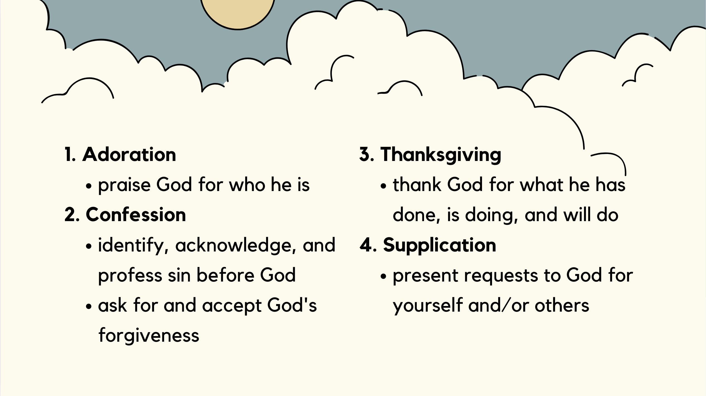

Devotional Life - How to Pray: ACTS
Alpha Project Session #5: Emily Xia
(Credits)
- What is prayer?
- Why should we pray?
- How to pray (ACTS method)
Prayer is:
- Communication with God
- Not just talking to Him, but also with Him
- Engaging in fellowship with our Creator
Why should we pray?
36“Teacher, which is the great commandment in the Law?” 37And he said to him, “You shall love the Lord your God with all your heart and with all your soul and with all your mind. 38This is the great and first commandment.”
Matthew 22:36-38
- The greatest commandment is to love God
- Prayer is a way to develop an intimate relationship with God
Jesus prayed all the time during His life on earth!
"But he would withdraw to desolate places and pray."
Luke 5:16
"And rising very early in the morning, while it was still dark, he departed and went out to a desolate place, and there he prayed."
Mark 1:35
"In these days he went out to the mountain to pray, and all night he continued in prayer to God."
Luke 6:12
Prayer Method: ACTS (Adoration, Confession, Thanksgiving, Supplication)
1. Adoration
- Adore: worship as divine; love or revere deeply
- Praising God for who He is
-
"Through him then let us continually offer up a sacrifice of praise to God, that is, the fruit of lips that acknowledge his name."
Hebrews 13:15
- “Adoration is the spontaneous yearning of the heart to worship, honor, magnify, and bless God… In the prayer of adoration we love God for himself, for his very being, for his radiant joy.” Richard Foster
- Ways to pray prayers of adoration:
- Pray through the Psalms (Psalm 8, 40, 96, 103, 111, 117, 145)
- Praise God for creation
- Go for a prayer walk and enjoy nature
- Pray/sing songs of praise
2. Confession
- Acknowledging our sins before God
- Allowing light to expel darkness and experiencing God’s mercy
-
8If we say we have no sin, we deceive ourselves, and the truth is not in us. 9If we confess our sins, he is faithful and just to forgive us our sins and to cleanse us from all unrighteousness.
1 John 1:8-10
3. Thanksgiving
- Giving thanks to God for what He has done, is doing, and will do
-
16Rejoice always, 17pray without ceasing, 18give thanks in all circumstances; for this is the will of God in Christ Jesus for you.
1 Thessalonians 5:16-18
4. Supplication
- Petitioning or asking God for something
-
"Do not be anxious about anything, but in everything by prayer and supplication with thanksgiving let your requests be made known to God."
Philippians 4:6-7
Summary:
- Prayer is communication with God
- It helps us develop an intimate relationship with Him
- The ACTS prayer method helps focus our hearts on who God is and what He has done
